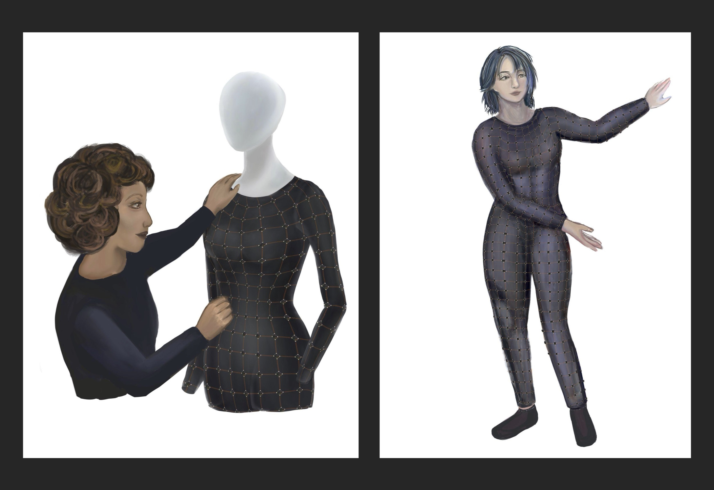
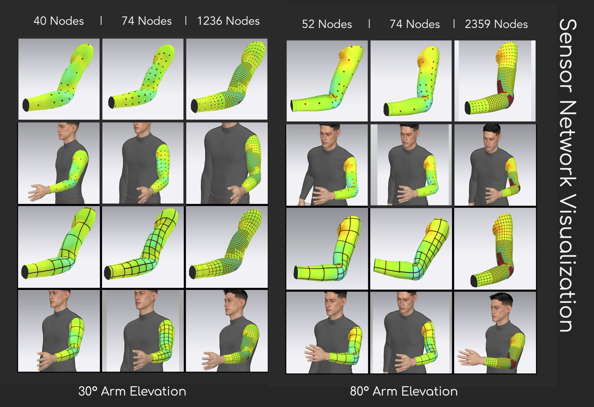
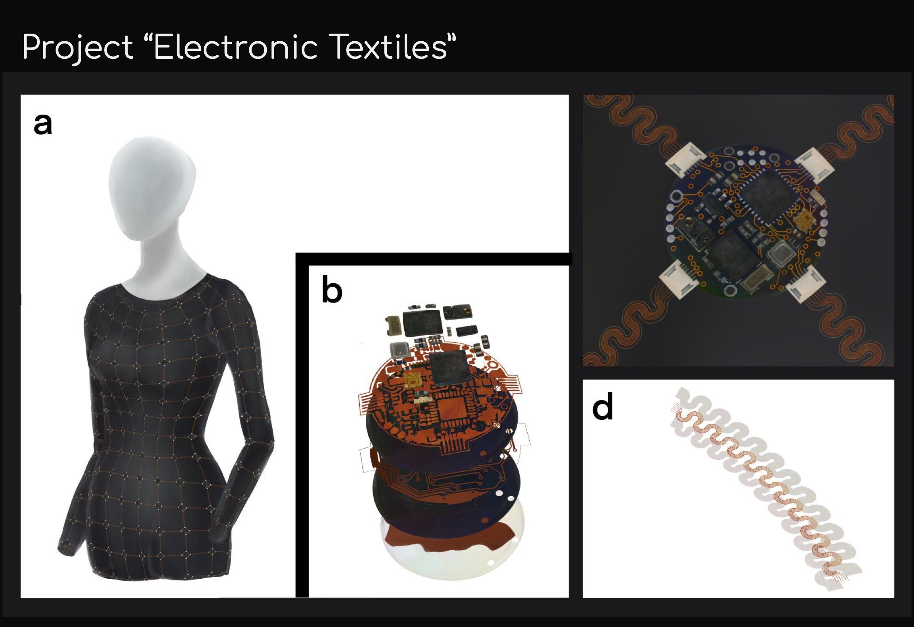
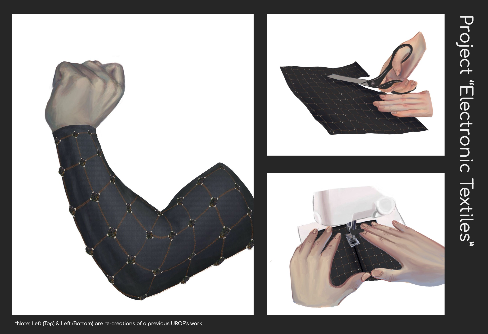

Overview
Concept art and 3D visualization project for sensor network applications under the supervision of Irmandy Wicaksono. Focused on device designs and user interaction within electronic textile systems.
This project explored the intersection of wearable technology and textile design, creating visual concepts that demonstrate how sensors and electronic components can be seamlessly integrated into fabric-based interfaces. The work involved both artistic visualization and technical consideration of real-world implementation constraints.
Concept Gallery





Concept Animation
This animation demonstrates the dynamic behavior of sensor networks within electronic textile systems, showcasing how data flows and interactions occur in real-time applications.
Design Process
The design process involved extensive research into current wearable technology limitations and opportunities for improvement. Using tools like CLO 3D, Blender, and Photoshop, I created detailed visualizations that bridge the gap between conceptual ideas and practical implementation.
Each concept piece was developed with consideration for sensor placement, user comfort, and aesthetic integration with everyday clothing. The goal was to make electronic textiles feel natural and appealing rather than intrusive or overtly technological.
Key Contributions
-
Concept Art & Visualization
Created 20+ concept art pieces for sensor networks and device integration within wearable textile systems.
-
3D Design & Modeling
Developed detailed 3D visualizations using CLO 3D, Blender, and Photoshop to demonstrate integration possibilities.
-
Algorithm Optimization
Optimized algorithms for accurate visualization of smart garment patterns and sensor placement.
-
Research Collaboration
Collaborated with researchers on technical feasibility assessments and real-world implementation constraints.
-
Documentation & Analysis
Documented design rationale and implementation considerations for future development reference.